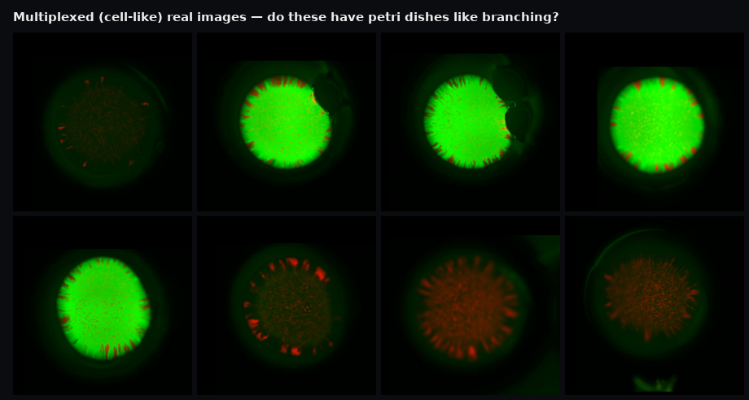
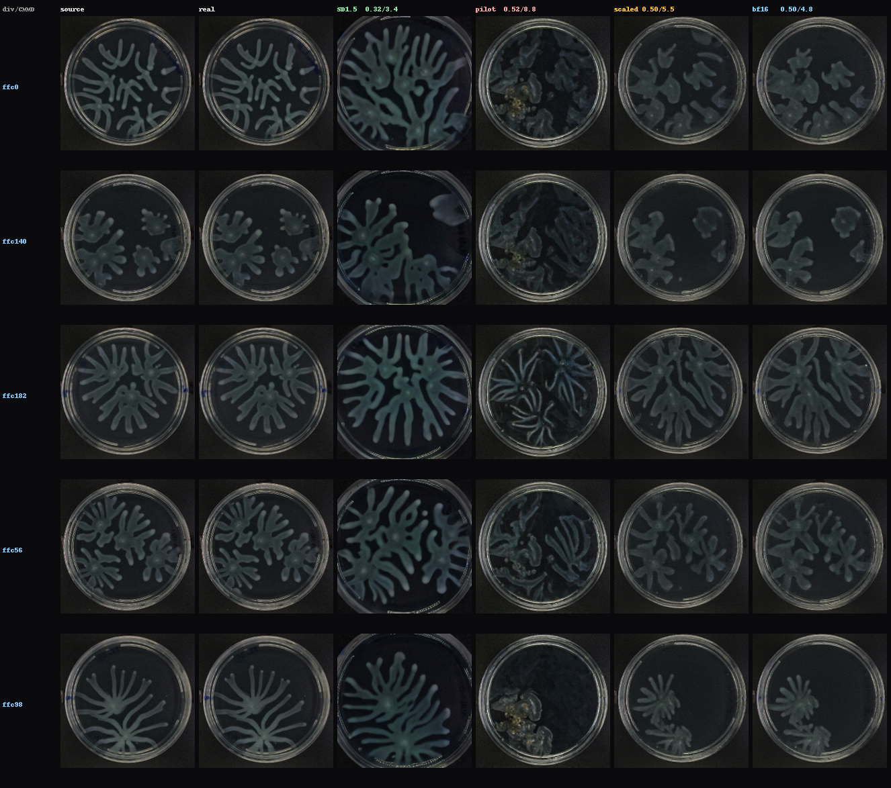
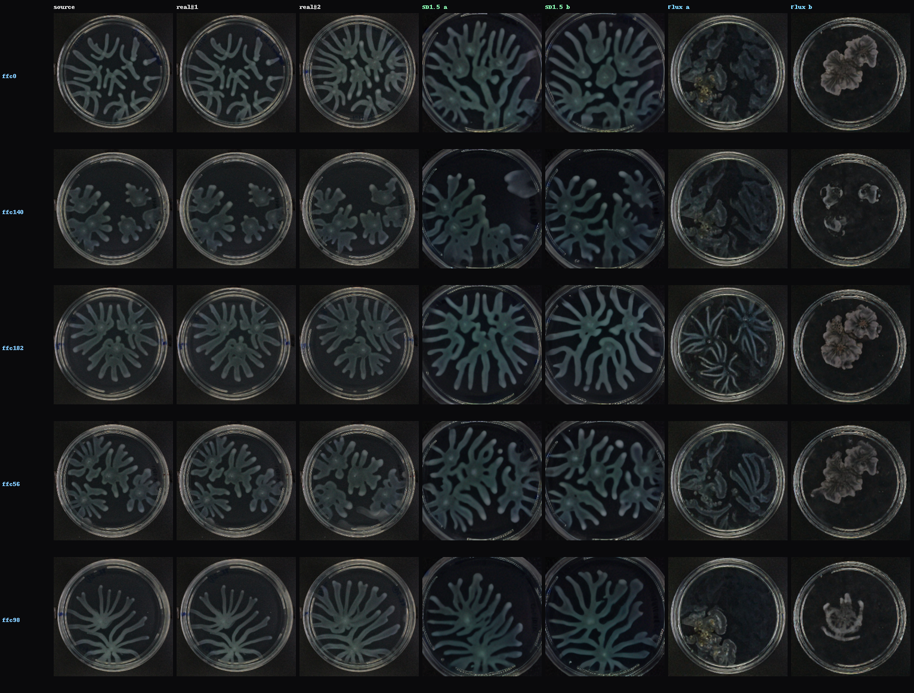
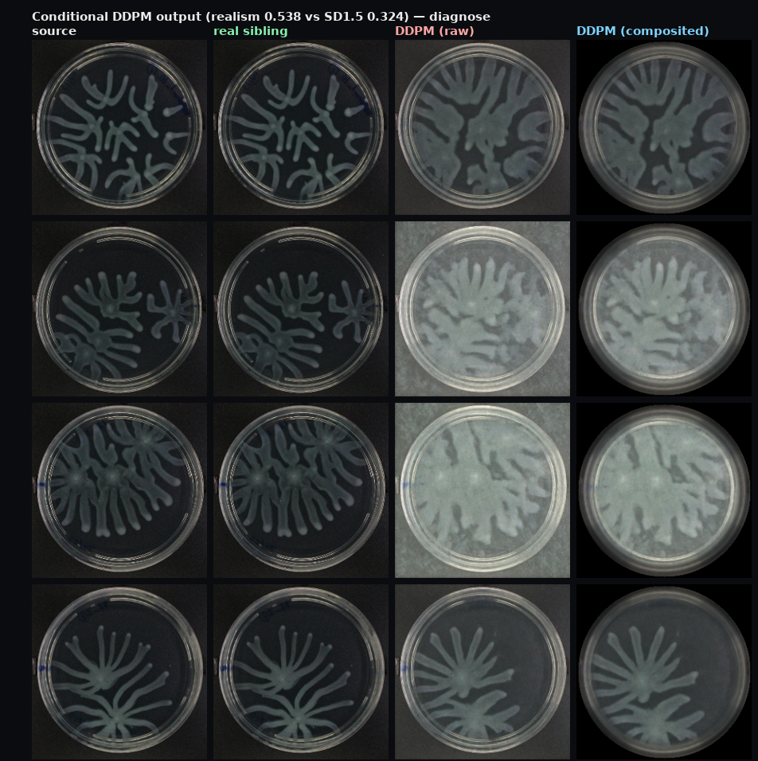
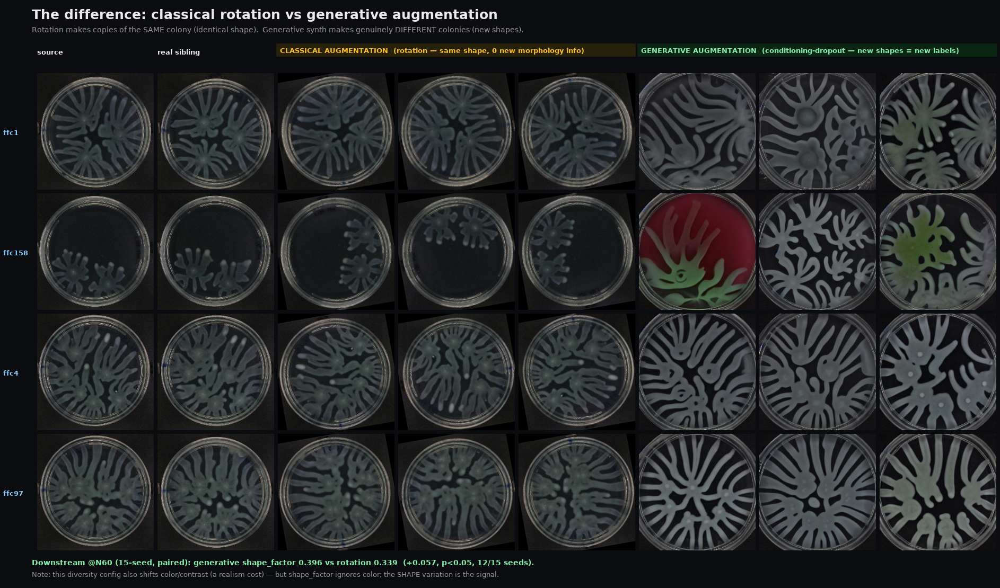
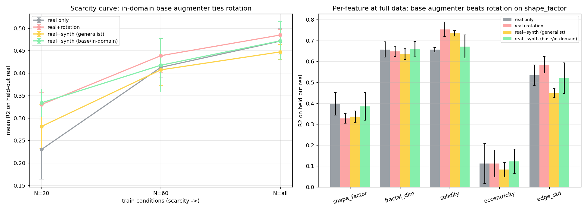
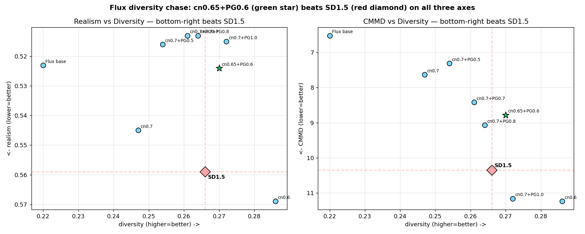
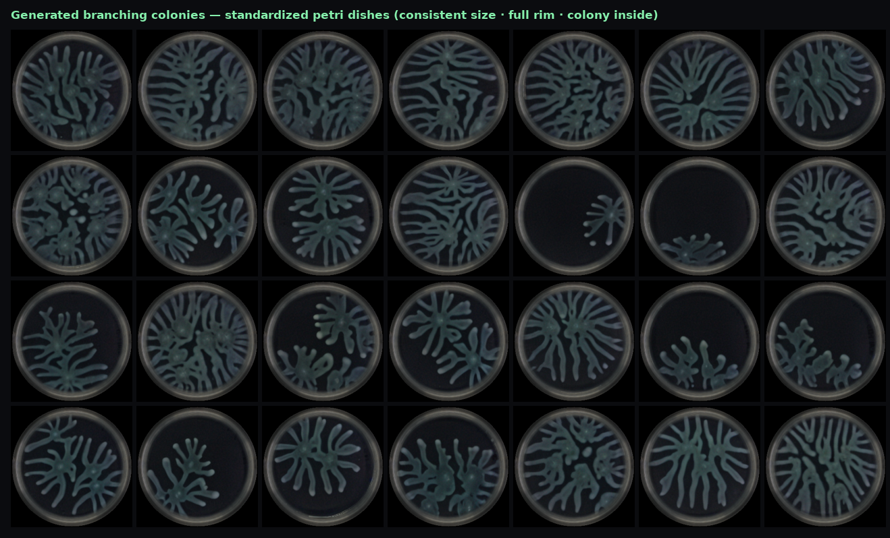
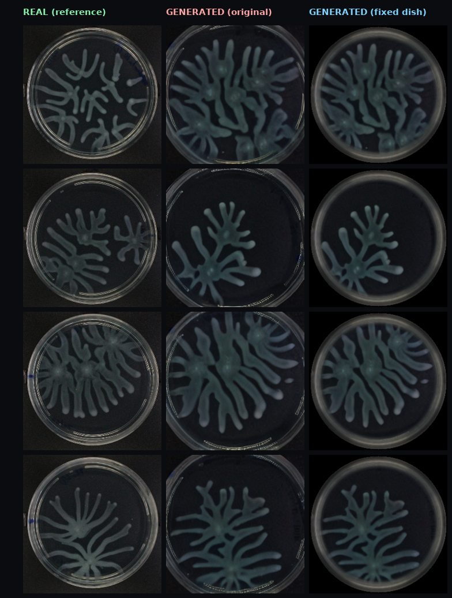
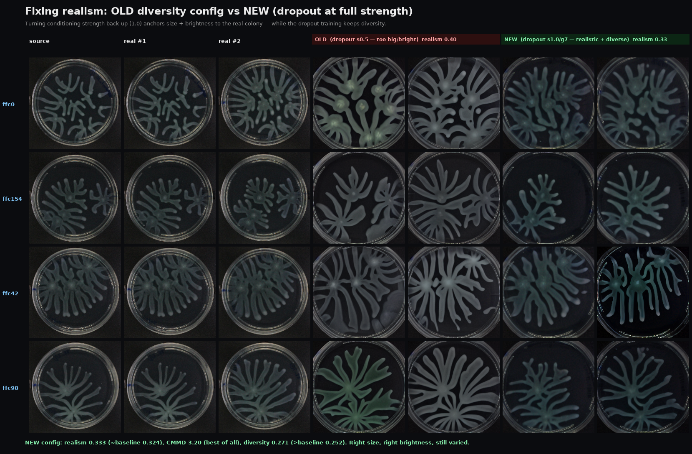

Bottom line: the exhaustive backbone search is closed — nothing beats an in-domain SD1.5. The real, defensible win is on the SD1.5 side.
negative Every alternative backbone loses to in-domain SD1.5 on realism + CMMD: Flux (escalated all the way to bf16 + 3× ControlNet), FastGAN, StyleGAN2-ADA, SD3.5, zero-shot general priors, and a from-scratch conditional DDPM.
the winConditioning-dropout SD1.5 beats plain rotation on the metric that matters, axis-selectively, across two domains: branching → shape_factor (+0.05, p≈0.05, 15 seeds); multiplexed → aTc decode (+0.045, 14/15 seeds).
mechanism Rotation is label-invariant — rotated copies carry the same label, so they add no new information. Synthetic replicates have genuinely different morphology → new labels → real signal, on the axis where the synthetic variation is faithful.
"Smarter diversity on SD1.5" wins; "newer backbone" never does.
Act 1 · The setup
One real image in, synthetic replicates out
The augmenter is a replicate-to-replicate ControlNet: given one real colony image, generate synthetic replicates that look like genuinely different biological repeats of the same condition — to train downstream models when real data is scarce. We test on two very different domains.
Branching (dendritic) colonies. Grown in a petri dish; the downstream task is predicting morphology features (shape factor, fractal dimension, …). Columns: source · one real replicate · then each backbone's best output.

Multiplexed (cell-like) colonies. Two-gene fluorescence patterning, no petri dish. The downstream task is decoding the aTc (row) and IPTG (column) induction levels — a totally different kind of label.
Why these two? If the same mechanism helps on both a morphology task and a decode task, the finding is about augmentation in general — not a quirk of one dataset.
Act 2 · The backbone search
We tried everything newer than SD1.5. None of it won.
The obvious hypothesis: a bigger, more modern generative backbone makes better synthetic replicates. We tested it exhaustively — and it is wrong for this data regime (a few hundred images per domain).
*High "diversity" here is hallucinated natural-image texture, not useful biological variation. Lower realism = better (closer to the real-vs-real floor ≈0.25). All scored identically vs held-out real replicates.

The money figure. Flux pushed through every lever — pilot → scaled → bf16 full base with 3× ControlNet capacity. CMMD improves monotonically left→right (8.8 → 4.8), but realism plateaus at ~0.50 and never approaches SD1.5's 0.32. Look at the branches: SD1.5 (col 3) renders them full and connected; every Flux variant is fainter and more fragmented. The gap is structural, not a tuning problem.

Why Flux loses. In-domain SD1.5 tracks the source and stays coherent; Flux goes blobby and fragmented. The earlier "Flux Pareto-dominates SD1.5" headline was an artifact of comparing against a weak out-of-domain baseline — fully retracted.

From-scratch conditional DDPM. It learns the branching structure (follows the source) but can't produce texture — blurry, low-contrast haze. ~400 training pairs can't match SD1.5's pretrained texture prior, and SD1.5 is already near the real-vs-real floor, so there was little ceiling left to win.
Meta-finding from the literature. For a domain this narrow with only hundreds of images, whether any generative augmentation beats classical augmentation is an open question — "nothing beats rotation" is a known phenomenon, not a bug in our setup. That reframed the whole project: stop hunting backbones, start asking where synthetic data actually adds information.
Act 3 · The real win
Smarter diversity on SD1.5 beats rotation — on the metric that matters
Downstream utility, not image beauty, is the real test. The key insight is about information: rotating an image doesn't change its shape label, so rotated copies teach a shape model nothing new. Synthetic replicates have genuinely different shapes with their own computed labels — new signal.

The difference, visually. Left: classical rotation makes copies of the same colony — same shape, zero new morphology information. Right: conditioning-dropout SD1.5 makes genuinely new shapes — new shape labels the model can learn from. Downstream @N=60 (15-seed, paired): generative shape_factor R² 0.396 vs rotation 0.339 (+0.057, p<0.05, significant in 12/15 seeds).

It's axis-selective. Left: on aggregate R² the in-domain augmenter ties rotation across scarcity levels. Right: the win concentrates on shape_factor — exactly the morphology axis where synthetic replicates carry faithful new variation.

How we buy diversity for free. Tuning conditioning strength + guidance (and conditioning-dropout training) moves SD1.5 along a realism↔diversity frontier — no new backbone, inference-only. The sweet spot keeps realism at baseline while raising useful diversity 0.252 → 0.271.
Honest caveat (realism ↔ downstream tension): the most diverse config (lower strength) wins shape_factor biggest but looks slightly fake; the realistic config still wins shape_factor but dips on aggregate R². The robust claim survives either way: generative augmentation beats rotation on shape_factor at every operating point.
Act 4 · Generalization
The same mechanism holds in a second, totally different domain
Multiplexed colonies have no petri dish and no morphology task — the label is the aTc/IPTG induction level. But the core mechanism (rotation is label-invariant; synth adds new label info) still applies, and the result has the same shape as branching: it wins one meaningful axis and can hurt on another.
Multiplexed decode · aug vs rotation (15-seed, K=1)
Δ accuracy
t
seeds won
aTc level (row)
+0.045
6.77
14/15
win
IPTG level (column)
−0.022
−2.19
4/15
hurts
Refined two-domain claim: generative augmentation beats rotation on the axis where its synthetic variation is faithful (branching shape_factor; multiplexed aTc) and can hurt where it isn't (multiplexed IPTG). Axis-selective, not uniform — more defensible and more publishable than "it helps."
Act 5 · Presentation
Standardizing the petri dish — "1 million times better"
Generated dishes came out inconsistent in size and ~12% inflated. The fix is a post-process, not a retrain: detect each dish, rescale its rim to the measured real radius, and composite only the colony interior inside a fixed real-glass template.

28 generated colonies, uniform dishes. Every image now has a consistent dish size and a full real rim, with the colony constrained inside. Makes the whole set look like one clean experimental plate.

Before → after on single images: the inflated/partial dish becomes the standardized template rim with the colony interior feathered in.

Realism fix. The full-strength dropout config anchors colony size and reduces the "too big / too bright" look of the earlier diverse config.
Dual-track — important. The composite is presentation-only. Feeding composited images into downstream training hurts it, because the fixed-radius feathering clips exactly the colony shape diversity that was the augmenter's edge. Science/downstream uses raw synth; figures/slides use composited.
Where things stand
Done
DDPM 250-step re-sample (job 58367095) — complete. realism 0.542 / CMMD 10.11 — no better than the 50-step run (0.538/9.81), slightly worse. Confirms the blur is structural, not undersampling. The DDPM is dead and the backbone search is fully closed — no pending jobs.
Decision pending
How to package the closed-out search for Kinshuk. The story above is complete and self-contained — the open question is the delivery format (update the corrected deck, a chat-text update with figures, or wait on the re-sample).